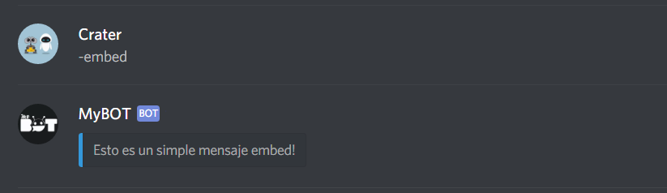
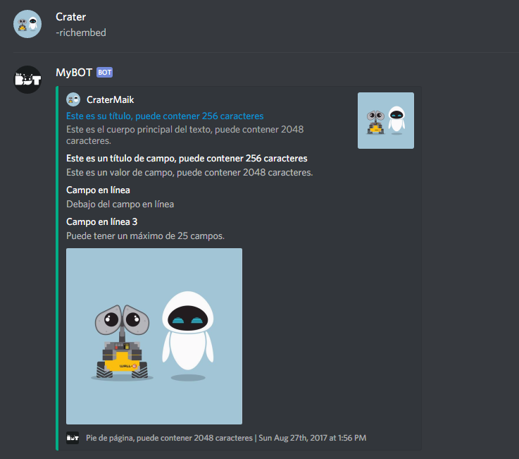
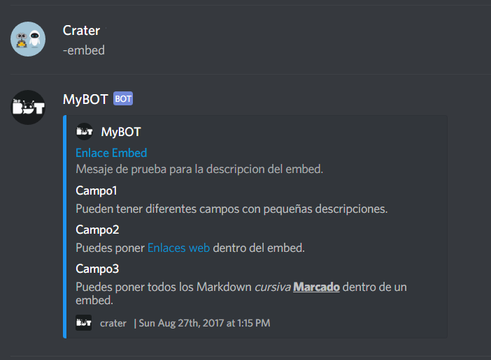

Instalación y uso de un editor de código
Creación de su cuenta App y de Bot
Instalación de Discord.js y Node.js
Introducción a un Bot de musica/audio
Un embed es un tipo de mensaje con una interfaz fluida con muchas propiedades para la creación de un mensaje. Teniendo encuenta que no tendrán la misma apariencia en los moviles.
Algunas reglas de embeds que tienes que saber:
Son reglas necesarias para una buena inserción del mensaje embed.
Hay 2 maneras de hacer embeds. La primera, es escribir el embed usted mismo, como un objeto. Aquí hay un ejemplo de embed en una sola línea:
if (message.content.startsWith(prefix +"embed")){
message.channel.send({embed: {
color: 3447003,
description: "Esto es un simple mensaje embed."
}});
}
Resultado:

NOTA: El "color" determina la barra a la izquierda, y "description" el contenido principal del mensaje.
La segunda manera de hacer un embed, que podria ser mas simple es usando el constructor RichEmbed.
Se aplican las mismas reglas que las normales. De hecho, el constructor es sólo un acceso directo para obtener el mismo objeto.
Aquí un ejemplo, creando un nuevo comando "richembed":
if (message.content.startsWith(prefix +"richembed" )){
const embed = new Discord.RichEmbed()
.setTitle("Este es su título, puede contener 256 caracteres")
.setAuthor(message.author.username, message.author.avatarURL)
.setColor(0x00AE86)
.setDescription("Este es el cuerpo principal del texto, puede contener 2048 caracteres.")
.setFooter("Pie de página, puede contener 2048 caracteres", client.user.avatarURL)
.setImage(message.author.avatarURL)
.setThumbnail(message.author.avatarURL)
.setTimestamp()
.setURL("https://github.com/CraterMaik")
.addField("Este es un título de campo, puede contener 256 caracteres",
"Este es un valor de campo, puede contener 2048 caracteres.")
.addField("Campo en línea", "Debajo del campo en línea", true)
.addBlankField(true)
.addField("Campo en línea 3", "Puede tener un máximo de 25 campos.", true);
message.channel.send({embed});
}NOTA: .setTimestamp() Toma un objeto Date, por defecto a la fecha actual, .addBlankField() Campo en blanco, útil para crear un poco de espacio.
Resultado:

NOTA: Las incorporaciones pueden parecer atractivas, pero no tendrán la misma apariencia en los móviles.
Los campos son los que puede hacer que los embeds sean realmente agradables cada campo puede tener un título y un valor, y los campos también se pueden apilar por columnas. un ejemplo más complejo de un embed que tiene muchos campos diferentes, así como iconos y un pie de página:
if (message.content.startsWith(prefix +"embed")){
message.channel.send({embed: {
color: 3447003,
author: {
name: client.user.username,
icon_url: client.user.avatarURL
},
title: "Enlace Embed",
url: "https://github.com/CraterMaik",
description: "Mesaje de prueba para la descripcion del embed.",
fields: [{
name: "Campo1",
value: "Pueden tener diferentes campos con pequeñas descripciones."
},
{
name: "Campo2",
value: "Puedes poner [Enlaces web](https://github.com/CraterMaik) dentro del embed."
},
{
name: "Campo3",
value: "Puedes poner todos los Markdown *cursiva* **__Marcado__** dentro de un embed."
}
],
timestamp: new Date(),
footer: {
icon_url: client.user.avatarURL,
text: github.com/CraterMaik"
}
}
});
}
Resultado:

Si tiene alguna pregunta y/o duda después de leer esta guía, ingrese al servidor guía en Discord: MyBOT - Server guía.
Sitio web github/Crater